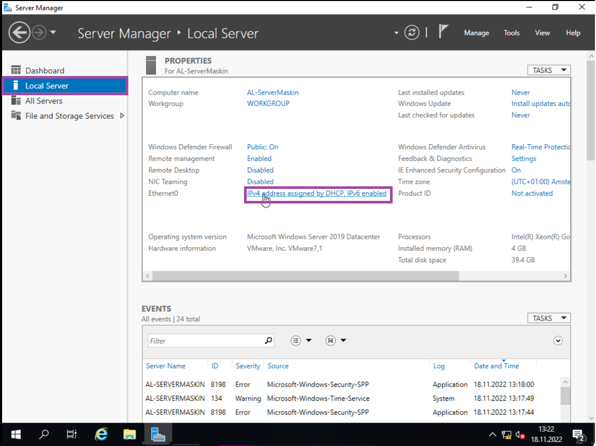
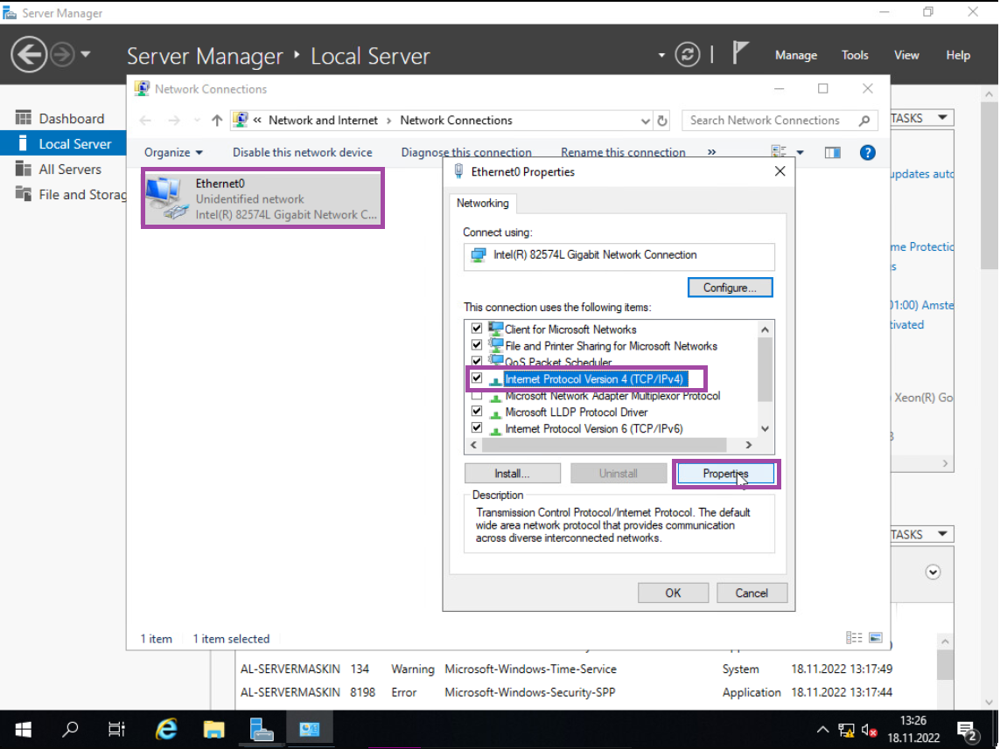
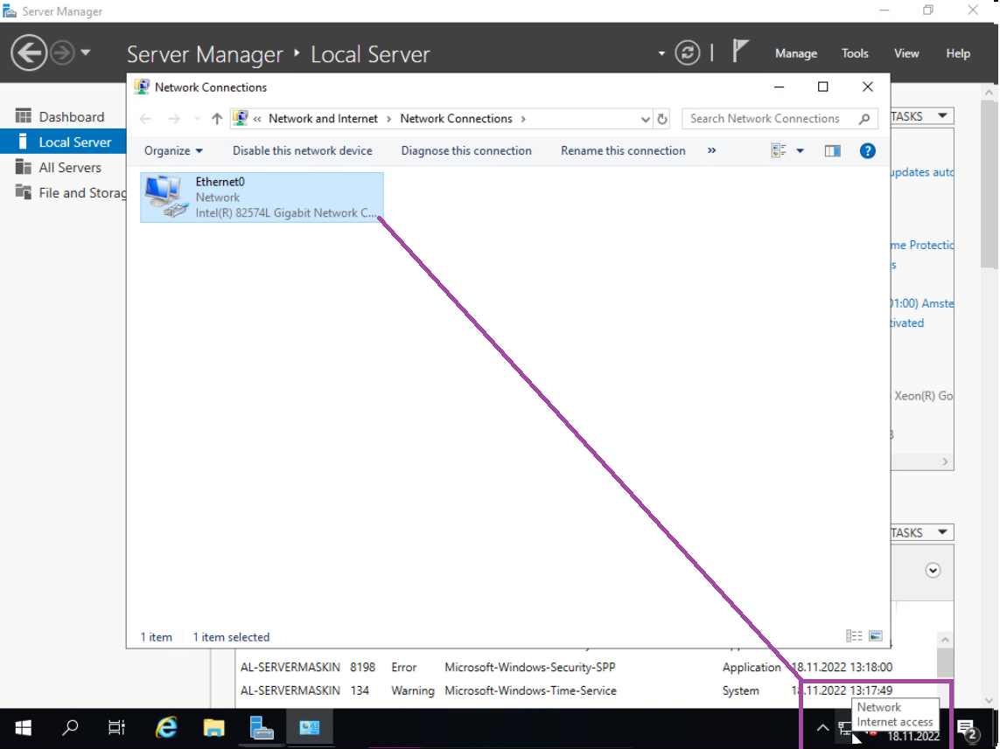

LAURIN LIMITED GUIDEBOOK ©
KOBLE SERVEREN OPP TIL INTERNETT MED STATISK IP
Vi bruker manuell konfigurering for å sette opp serveren til internettet.
Nå skal vi sette opp en statisk IP, for å koble serveren opp med internettet. Dette gjør vi ved å navigere til «Local Server», og trykk på lenken ved siden av «Ethernet0».
Når «Network Connections» åpner, så høyreklikker du «Ethernet0» og trykker på «Properties». Dette åpner «Ethernet0 Properties». Her så trykker du på «Internet Protocol Version 4(TCP/IPv4)», og deretter på «Properties».
Her så velger du «Use the following IP address:» og skriver inn nettverks detajlene. OBS: Du kommer til å ha annerledes informasjon enn meg.
FØLGENDE IP DETALJER:
IP Address: 10.12.elevnr.unikIP
Subnet Mask: 255.255.255.0
Default Gateway: 10.12.elevnr.1
Preferred DNS Server: 10.10.1.30
Når du er ferdig, trykker du på «OK».
Lukk igjen «Ethernet properties» fanen, så burde du få en windows notifikasjon om du vil at andre nettverk vil finne deg, trykk på «Yes», her. Nå kan du også sjekke i nederst høyre hjørne om serveren har nettverk.
Fortsett til neste steg